Composantes essentielles
- en formalisant et modélisant des situations complexes
- en recensant les algorithmes et les structures de données usuels
- en s'appuyant sur des schémas de raisonnement
- en justifiant les choix et validant les résultats
Séparer en deux sujet de deux exercice chacun, ce projet nous a fait découvrir différent type de trie avec leurs avantages et inconvénients.
Quelque exemples du code.
Nos compte-rendu.
Ce projet correspond au 4 Composantes essentielles.
Il correspond aussi aux Apprentissages critiques Analyser un problème avec méthode et Comparer des algorithmes pour des problèmes classiques.
Générer graphiquement un graphe non orienté à partir d’un fichier texte.
Avec les chaque sommet on des coordonée défini dans le fichier ainsi qu'une région.
Les sommet sont rélier par des arrètes, qui peuvent petre valuer ou non.
Le but est de pourvoir colorier les arrètes suivant quelque règle.

Ce projet correspond au 4 Composantes essentielles.
Il correspond aussi aux Apprentissages critiques Analyser un problème avec méthode et Comparer des algorithmes pour des problèmes classiques.
Projet scolaire en groupe, réaliser un projet au choix mais doit être dans un dockfiler sur github.
Nous avons réaliser un "Quel est ce pokemon ?".
Avec une base de données des pokemon de la première génération, 151 pokemons.
Cette base de données est integré dans des page html, grâce au laguage php.
Les modèle Entité/Association et Relationnel


Quelque exemples du code.

 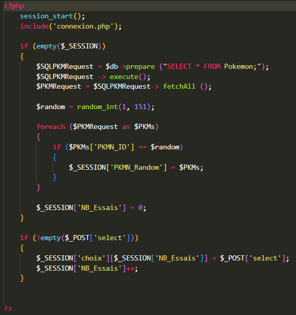
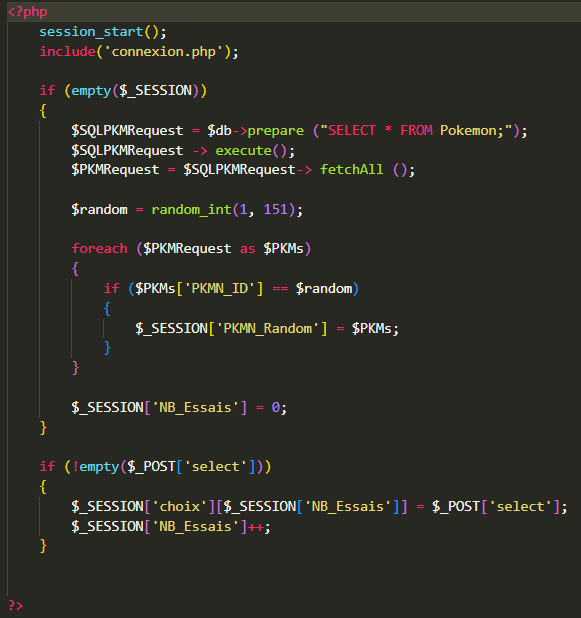

Voilà le résultat.
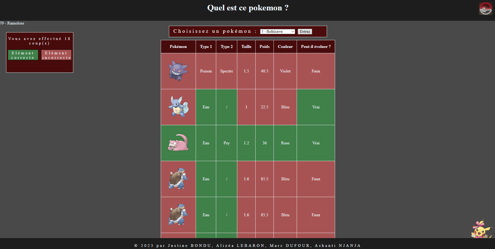
 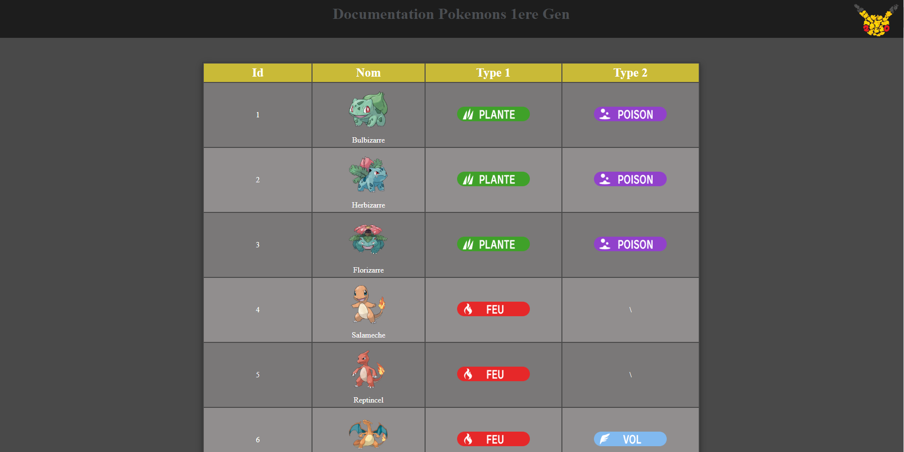
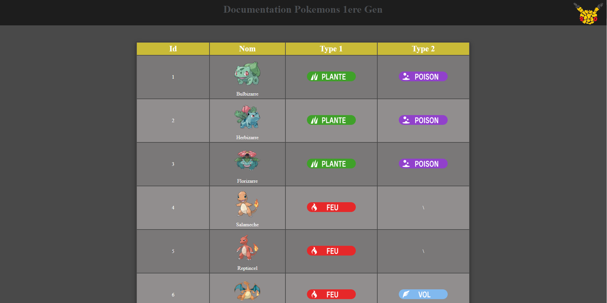
Voir notre projet sur github.
Ce projet correspond à 3Composantes essentielles qui sont
Développer le jeux cinke tera, le but est colorier les voie maritime sur la carte pour amasser le plus de points.
Notre modèle UML.

Voici des exemples du code de ce qu'on a rendu.
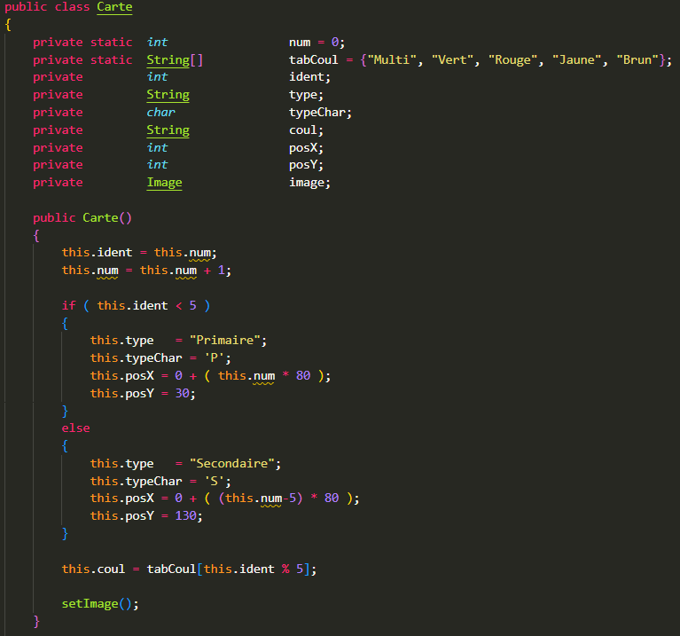
Voici une partie des résultat obtenue.
 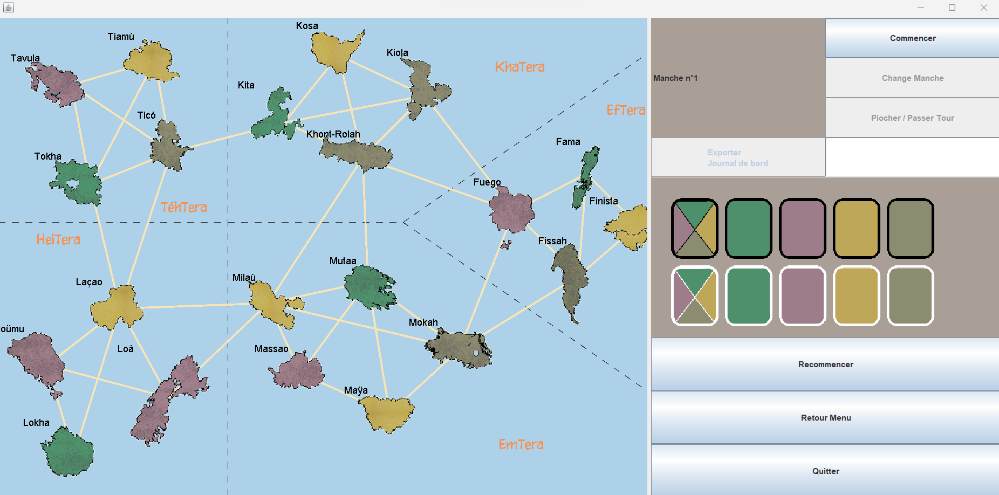
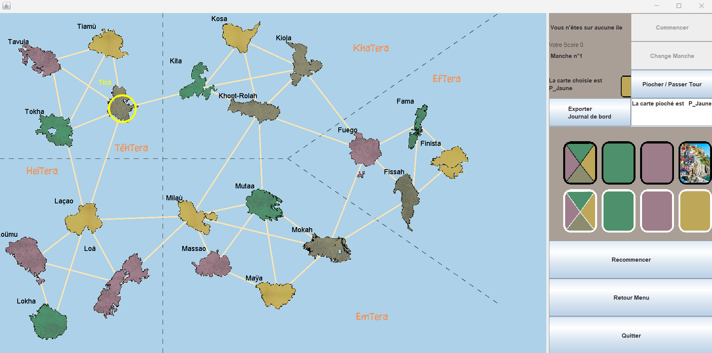
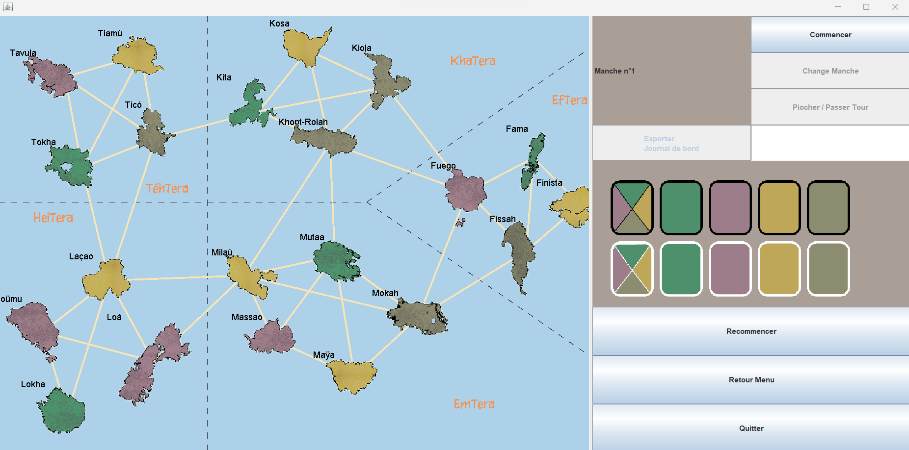
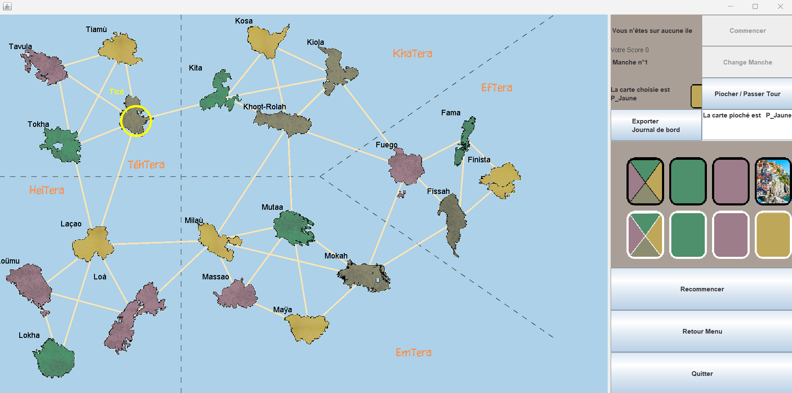
 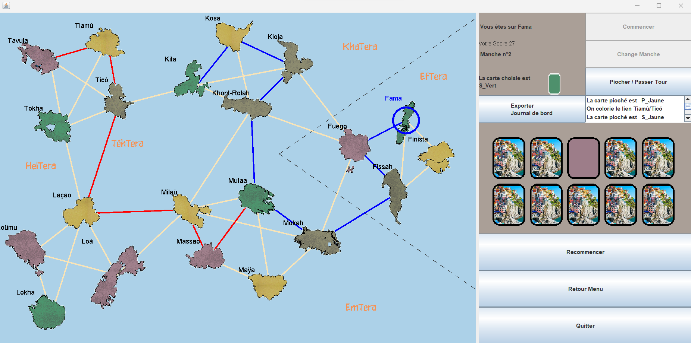
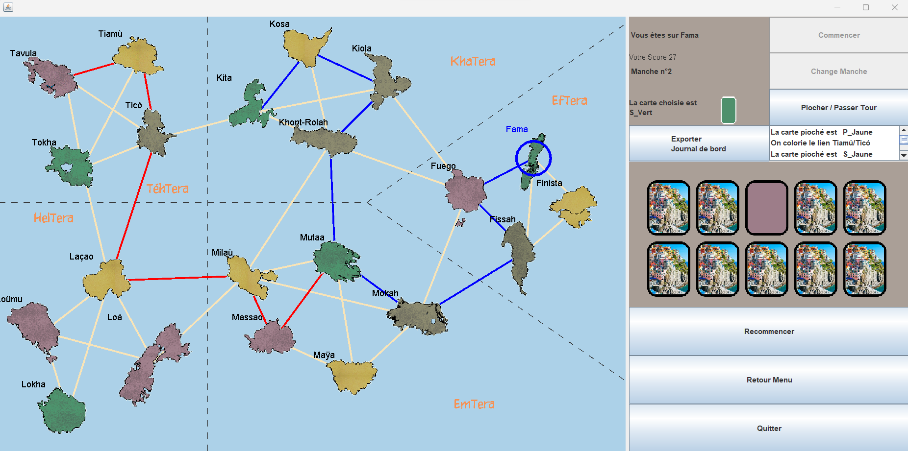


Ce projet correspond à 3 Composantes essentielles qui sont